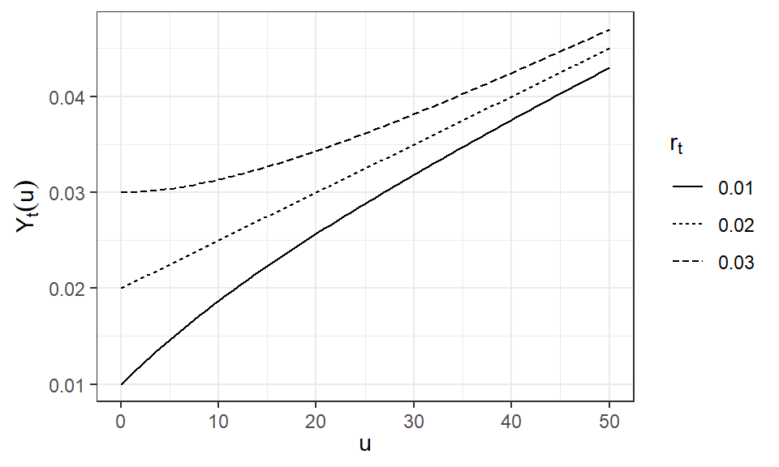

Hull-Whiteモデル
Hull-Whiteモデルは、Vasicekモデルの平均回帰パラメータを時間依存させることにより、市場で観測される金利の期間構造に完全に適合できるように拡張された金利モデルである。市場価格と整合的な無裁定評価を行うための標準的なモデルの一つとして利用される。
Hull-White モデルは、瞬間短期金利 \(r_t\) を以下の確率微分方程式に従う確率過程で表現する。
\[ \begin{align} dr_t &= (\theta(t) - \alpha\;r_t)\; dt + \sigma\; dW_t \\ &=\alpha\;(\frac{\theta(t)}{\alpha}-r_t)\;dt + \sigma\;dW_t \end{align} \]
ここで、\(\alpha\) は平均回帰速度、\(\sigma\) は拡散係数（ボラティリティ）、\(W_t\) はウィーナー過程であり、\(\theta(t) / \alpha\) は時間に依存する金利の平均回帰水準を表す。 なお、平均回帰速度や拡散係数も時間依存のパラメーターとして扱われることがある。
Hull-White の利点は、モデルに基づくイールドカーブを時点 \(0\) における市場のイールドカーブと整合させることができる点にある。 そのためには、\(\theta(t)\) を以下のように決定する。
\[ \theta(t) = \frac{\partial f(0, t)}{\partial t} + \alpha f(0, t) + \frac{\sigma^2}{2\alpha} (1 - e^{-2\alpha t}) \]
ここで、\(f(0, t)\) は時点 \(0\) における満期 \(t\) の瞬間フォワード・レートであり、割引債債価格 \(v(0, t)\) から以下のように定義される。
\[ f(0, t) = - \frac{\partial \ln v(0, t)}{\partial t} \]
このとき、Hull-Whiteモデルにおける割引債価格 \(v(t,T)\) は以下の式で表される。
\[ \begin{align} v(t,T) &= A(t,T)\exp\left(-B(t,T)\;r_t\right) \\ B(t,T) &= \frac{1-e^{-\alpha\;(T-t)}}{\alpha} \\ A(t,T)&=\frac{v(0,T)}{v(0,t)} \exp \left( B(t,T)\;f(0,t) -\frac{\sigma^{2}}{4\alpha}(1-e^{-2\alpha t})\;B(t,T)^{2} \right) \end{align} \]
連続複利ベースのゼロレート \(\delta(t,T)\) やその期間構造 \(Y_t(u)=\delta(t,t+u)\) は \(r_t\) に関する一次関数（アフィン写像）で表現される。
\[ \begin{align} \delta(t,T;\ r_t)&=-\frac{\ln v(t,T)}{T-t}=\frac{B(t,T)}{T-t}\;r_t -\frac{\ln A(t,T)}{T-t} \\ &=\frac{1-e^{-\alpha(T-t)}}{\alpha(T-t)}\;r_t +\left(-\frac{\ln A(t,T)}{T-t}\right) \\ \\ Y_t(u;\ r_t)&=\frac{1-e^{-\alpha u}}{\alpha u}\;r_t +\left( -\frac{\ln A(t,t+u)}{u} \right) \end{align} \]
ここで、右辺第一項は時点 \(t\) におけるイールドカーブと瞬間短期金利 \(r_t\) の関係を定めている。 連動の強さを表す係数 \(\beta(u)=(1-e^{-\alpha u})/(\alpha u)\) は残存期間 \(u\) に依存しており、\(u \to 0\) で \(\beta(u) \to 1\)、\(u \to \infty\) で \(\beta(u) \to 0\) であるから、残存期間が短期であるほど \(r_t\) に強く連動し、長期であるほど \(r_t\) の変化への反応が鈍くなります。 なお、\(\beta(u)\) のグラフは平均回帰速度 \(\alpha\) に応じて次のようになる。
イールドカーブ \(Y_t(u)\) を表現する式は以下のように変形できる。
\[ \begin{align} -\frac{\ln A(t,t+u)}{u} &= -\frac{\ln ({v(0,t+u)}-{v(0,t)})}{u} - \frac{B(t,t+u)}{u}\;f(0,t) + \frac{\sigma^{2}}{4\alpha}(1-e^{-2\alpha t})\;B(t,t+u)^{2} / u \\ &=\delta_f(0,t,t+u)-\beta(u)f(0,t)+\frac{\sigma^{2}}{4\alpha}(1-e^{-2\alpha t})\;u\beta(u)^2 \\ \\ Y_t(u;\ r_t) &= \delta_f(0,t,t+u)+ [r_t-f(0,t)]\;\beta(u)+ \frac{\sigma^{2}}{4\alpha}(1-e^{-2\alpha t})\;u\beta(u)^2 \end{align} \]
右辺の第一項は当初（時点 \(0\) において）予測されていた将来のイールドカーブに対応し、 第二項は時点 \(t\) における瞬間金利 \(r_t\) が当初の予想 \(f(0,t)\) から乖離した分だけイールドカーブをシフトさせる。 第三項は、金利のボラティリティ \(\sigma\) に応じてイールドカーブをわずかに調整するための項であるとみなせる。
以下、見本路を構築してプロットするために、オイラー・丸山法を用いて Hull-White モデルの離散化を行う。時間刻みを \(\Delta t\) とすると、以下のように定数項が時間変化する時変 AR(1) 過程として表現できる。
\[ \begin{align} r_{t+\Delta t} &= r_t + (\theta(t) - \alpha r_t)\;\Delta t + \sigma \sqrt{\Delta t}\; \epsilon_t\\ &= \theta(t) \Delta t + (1 - \alpha \Delta t)\; r_t + \sigma \sqrt{\Delta t}\; \epsilon_t \end{align} \]
ここで、時点 \(0\) における瞬間フォワードレートが傾き \(\gamma\) の直線 \(f(0, t) = r_0 + \gamma t\) であると仮定すると、\(\theta(t)\) は次のような関数となる。
\[ \begin{align} \theta(t) &= \frac{\partial f(0, t)}{\partial t} + \alpha f(0, t) + \frac{\sigma^2}{2\alpha}(1 - e^{-2\alpha t}) \\ &= \gamma + \alpha (r_0 + \gamma t) + \frac{\sigma^2}{2\alpha}(1 - e^{-2\alpha t}) \end{align} \]
また、イールドカーブについて次が成り立つ。
\[ Y_0(t)=\delta(0,t)=\frac{1}{t}\int_0^{t}f(0,s)ds=r_0+\frac{\gamma}{2}t \]
\[ \begin{align} Y_t(u;\ r_t) &= \delta_f(0,t,t+u) + [r_t-f(0,t)]\;\beta(u) + \frac{\sigma^{2}}{4\alpha}(1-e^{-2\alpha t})\;u\beta(u)^2 \\ &\approx (r_0+\gamma t+\frac{\gamma}{2}u) + \left[r_t-(r_0+\gamma t)\right] \beta(u) \end{align} \]

以下、離散化した Hull-White モデルの見本路を計算してプロットする。
library(ggplot2)
theme_set(theme_bw())
# parameters
years <- 20
nsteps <- 100 * years
dt <- years / nsteps
times <- seq(0, years, by = dt)
npaths <- 50
r0 <- 0.01
alpha <- 0.1
sigma <- 0.01
gamma <- 0.002
# function to calculate theta
theta <- function(t) {
gamma
+ alpha * (r0 + gamma * t)
+ (sigma ^ 2 / (2 * alpha)) * (1 - exp(-2 * alpha * t))
}
# simulation
set.seed(42)
df <- list()
for (i in seq_len(npaths)) {
sim_path <- numeric(nsteps + 1)
sim_path[1] <- r0
for (j in seq_len(nsteps)) {
t <- times[j]
rt <- sim_path[j]
dr <- (theta(t) - alpha * rt) * dt + sigma * sqrt(dt) * rnorm(1)
sim_path[j + 1] <- rt + dr
}
df[[length(df) + 1]] <-
data.frame(id = i, time = times, rate = sim_path)
}
df <- do.call(rbind, df)
# visualization
ggplot(df, aes(x = time, y = rate, group = id, alpha = id)) +
geom_line() +
labs(title = "Sample Paths of Hull-White Model",
x = quote(t), y = quote(r[t])) +
theme(legend.position = "none")